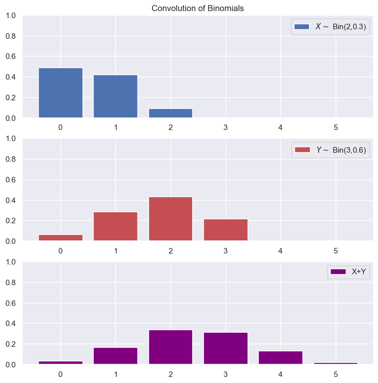

But what about the distribution?
This is a bit more involved to try to calculate. Let's try to get an understanding for how we might approach this.
Let us incrementally solve for harder systems.
Two Bernoulli Distributions
Let us consider two independent Bernoulli distributed variables, X and Y.
\(P(X=1)=p\); \(P(X=0)=1-p\)
\(P(Y=1)=q\); \(P(Y=0)=1-q\)
Using our set theory notation, let's write out the possibilities for X+Y:
X+Y=0: \(X=0\cap Y=0\)
X+Y=1: \((X=1\cap Y=0)\cup(X=0\cap Y=1)\)
X+Y=2: \(X=1\cap Y=1\)
While this may be a bit overkill, it helps us start with a basic system and extrapolate to more advanced cases.
In fact, the above list of outcomes holds even if the variables aren't independent!
Now to get the distribution, we can just take the probability of each outcome. Because X and Y can only take one value at a time each, the events X=0 and X=1 are mutually exclusive and same with Y=0 and Y=1.
This makes the calculation for X+Y=1 simpler as we don't have to invoke the Inclusion-Exclusion Principle.
$$P(X+Y=0) = P(X=0\cap Y=0)$$
$$P(X+Y=1)=P(X=1\cap Y=0)+P(X=0\cap Y=1)$$
$$P(X+Y=2) = P(X=1\cap Y=1)$$
Again, this calculation holds regardless of whether X and Y are independent.
Independent
In the case of independence, we can write the probabilities as follows:
$$P(X+Y=0) = P(X=0)P(Y=0)$$
$$P(X+Y=1)=P(X=1)P(Y=0)+P(X=0)P(Y=1)$$
$$P(X+Y=2) = P(X=1)P(Y=1)$$
Substituting in our values for the probabilities:
$$P(X+Y=0)=(1-p)(1-q)$$
$$P(X+Y=1)=p(1-q)+(1-p)q$$
$$P(X+y=2)=pq$$
Example: Convolution of Two Independent Binomials

Discrete Convolution PMF Example
Non Independent
If X and Y are not independent, we cannot simply factor out the probabilities. However, we can use the definition of conditional probability to rewrite.
$$P(X+Y=0)=P(Y=0|X=0)P(X=0)$$
$$P(X+Y=1)=P(Y=0|X=1)P(X=1)+P(Y=1|X=0)P(X=0)$$
$$P(X+Y=2)=P(Y=1|X=1)P(X=1)$$
In this example, I used the probability of X and the probability of Y given X, but this could have just as easily been reversed according to Bayes' Law.
By now, hopefully the way to generalize this is clearer. Note that this should not be confused with the concept of mixture distributions where the pdf is a combination of other pdfs. With convolution, we are summing the variables themselves.
Discrete
Let X and Y now be any two discrete distributions that have PMFs \(f_{X}(x)\) and \(f_Y(y)\) respectively.
The convolution of \(f_X\) and \(f_Y\) is a new function, which we shall denote \(f_Z(z)\), which corresponds to the PMF of a variable Z, such that
\(Z=X+Y\). Mathematically, this convolution of \(p_X\) and \(p_Y\), denoted \(p_X\star p_Y\), is defined as:
$$P(Z=z)=p_X\star p_Y=\sum_{x\in\text{supp}(p_X)}P(Y=z-w|X=x)P(X=x)$$
Continuous
For a continuous X and Y, we can write this as:
$$f_{Z}(z)=f_X\star f_Y=\int_{-\infty}^{\infty}f_{Y|X}(z-w|w)f_{X}(w)dw$$
Independence
You can think of this as taking the sum of the probabilities of all the possible ways that X and Y can add up to a target value.
If the two random variables are independent, then we can simplify the conditional probabilities and conditional densities to just be the regular probability and marginal density.
$$f_X\star f_Y=f_Y \star f_X$$
The order of convolution does not matter, this can be shown by a change of variables.
Associativity
Let X, Y, Z be three random variables with PDFs \(f_X\),\(f_Y\), \(f_Z\) respectively.
$$(f_X\star f_Y)\star f_Z = f_X \star (f_Y\star f_Z)$$
The same holds for discrete variables as well.
Distributive over Addition
$$f_X\star (f_Y+f_Z)=(f_X\star f_Y)+(f_X\star f_Z)$$
This can be useful if convolving with mixture distributions, where you have a weighted sum of densities.
Identity Element
The Dirac delta "function" is a distribution that integrates to 1 and has non-zero density at a single point.
$$f_X\star \delta(x)=f_X(x)$$
Moment-Generated Functions
$$M_{X+Y}(t)=M_X(t)\times M_Y(t)$$
Characteristic Functions
A similar statement holds for the characteristic function:
$$\phi_{X+Y}(t)=\phi_X(t)\times\phi_Y(t)$$
Similar Extensions
Similar to how we derived the distribution for the sum, we can do it for other binary operations as well by summing up the probabilities of all the difference ways to obtain a given value.
Product Distribution
Let X and Y be independent random variables, the distribution of a random variable Z that is given by \(Z=XY\) is a product distribution.
$$f_Z(z)=\int_{-\infty}^{\infty}f_X(x)f_Y(z/x)\frac{1}{|x|}dx$$
Stable Distributions
Some distributions have the nice property that linear combinations of random variables who are of its kind yield another random variable that is distributed with that distribution, albeit with different parameters.
The two main examples that we will see are Normal (Gaussian) distributions and Poisson distributions.
This is convenient because we can get a closed form version without having to go through all the effort of convolution.
Example: Normal Distribution
For independent X, Y with Z=X+Y.
$$Z\sim N(\mu_1+\mu_2, \sigma_1^2+\sigma_2^2)$$
Formal Definition
A random variable \(X\) is said to follow a stable distribution if, for any \(X_1, X_2\) that are iid copies of \(X\), the sum
\(X_1+X_2\) is distributed as \(aX+b\) for some constants \(a\gt 0\) and \(b\in \mathbb{R}\).
Characteristic Function
Stable distributions do not generally have closed-form expressions for their probability density functions (PDFs). Instead, they are typically described via their characteristic functions.
$$\varphi_X(t)=\mathbb{E}[e^{itX}]=\exp\left(it\delta -|ct|^\alpha\left(1-i\beta\frac{t}{|t|}\tan(\frac{\pi\alpha}{2})\right)\right)$$
where
\(\alpha\in(0,2]\) is the index of stability
\(\beta\in[-1,1]\) is the skewness parameter
\(c\gt0\) is the scale parameter
\(\delta\in\mathbb{R}\) is the location parameter
When \(\alpha=2\) and \(\beta=0\), the distribution is a normal distribution.
Properties
Heavy Tails
For \(\alpha\lt 2\), the stable distribution has heavy tails and infinite variance
Mean
For \(\alpha\leq 1\), the mean is undefined. One example is the Cauchy distribution which has \(\alpha=1\) and \(\beta=0\).
Related Theorems
Kolmogorov's Inequality
Let \(\left\{S_n\right\}\) be a partial sum of n independent random variables \(\{X_i\}\) with zero mean and finite variances \(\sigma_{i}^2\). Then for any \(a\gt 0\):
$$P(\max_{i\leq k\leq n}|S_k|\geq a)=\frac{\text{Var}(S_n)}{a^2}$$
where \(\text{Var}(S_n)=\sum_{i=1}^n\sigma_{i}^2\)
Convolution Practice Problems
Let \(X_1, X_2, \dots, X_n\) be independent and identically distributed (i.i.d.) random variables, each with a known PDF \(f_X(x)\). Use convolution to find the distribution of \(Y = X_1 + X_2 + \dots + X_n\). Do this entirely symbolically for arbitrary \(X_i\). Don't overthink this.
Draw the Distribution of Z where \(Z=X+Y\), \(X\sim U(0,1)\), and \(Y\sim U(0,2)\).
Let \(X_1\) and \(X_2\) be two independent random variables, each uniformly distributed on the interval \([0, 1]\). Compute the probability density function (PDF) of the random variable \(Y = X_1 + X_2\), i.e., find the convolution \(f_Y(y) = (f_{X_1} \star f_{X_2})(y)\).
Let \(X_1\) and \(X_2\) be independent and identically distributed random variables following a Poisson distribution with parameter \(\lambda\). Compute the distribution of \(Y = X_1 + X_2\), and determine its probability mass function (PMF).
Let \(X_1 \sim N(\mu_1, \sigma_1^2)\) and \(X_2 \sim N(\mu_2, \sigma_2^2)\) be two independent normally distributed random variables. Show that the convolution of these two distributions is also normally distributed, and find the mean and variance of the resulting distribution.
Suppose \(X_1 \sim \text{Exp}(\lambda_1)\) and \(X_2 \sim \text{Exp}(\lambda_2)\) are independent exponentially distributed random variables. Determine the distribution of the sum \(Y = X_1 + X_2\), and find the corresponding PDF \(f_Y(y)\).